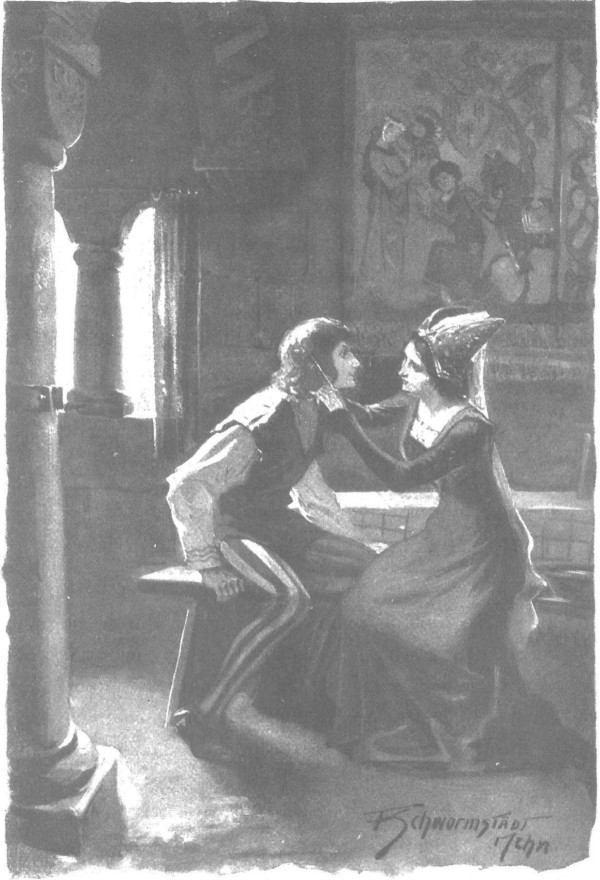
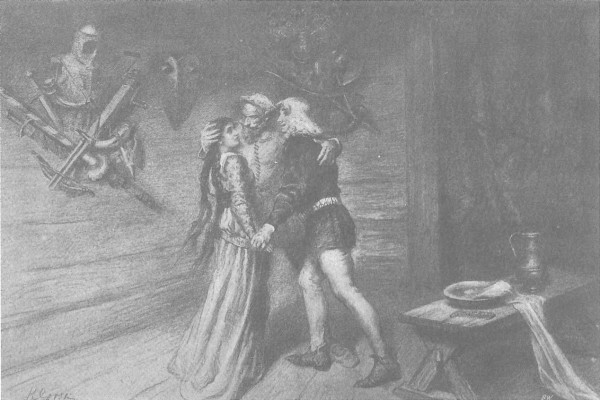

Zbyszko đã không thực hiện lời dọa dẫm và không ra di; một tuần sau, sức khỏe đã hoàn toàn hồi phục khiến chàng không thể nằm mãi trên giường. Ông Maćko bảo chàng bây giờ nên đến Zgorzelice để cảm ơn Jagienka đã dành thời gian chăm sóc, thế là một ngày nọ, sau khi đã tắm táp thật thoải mái, chàng quyết định đi ngay, không lần lữa. Chàng ra lệnh lấy trang phục trong rương để thay cho quần áo thông thường và bắt đầu sửa sang tóc tai. Tuy nhiên, chuyện đó khá khó khăn và không mấy nhẹ nhàng, không phải chỉ do mái tóc quá rậm của Zbyszko, dài như cái bờm đến tận thắt lưng. Hằng ngày, các hiệp sĩ thường bao tóc bằng mao mạng, khiến họ có mái tóc hình nấm, cách này có mặt tốt là trong chinh chiến, mũ sắt sẽ giúp họ ít bị tổn thương hơn nhiều, còn trong các dịp lễ lạt, như đám cưới hoặc đến thăm các gia đình có con gái mới lớn, họ lại chải chúng thành những cuộn tóc xoăn đẹp mắt, thường được bôi lòng trắng trứng để sáng bóng và cứng sợi hơn. Đó là kiểu đầu tóc mà Zbyszko muốn chải. Nhưng hai người phụ nữ được gọi trong đám gia nhân không quen việc đó, nên không làm nổi. Mái tóc khô và rối xù sau khi tắm gội không muốn nằm yên nếp mà chổng lên như mái nhà tranh xơ xác. Cả chiếc lược làm bằng sừng trâu có trang trí cướp được tại Fryzja, lẫn cái cào chải lông ngựa mà một gia nhân đã ra chuồng ngựa mang vào cũng không giúp được gì. Tới khi Zbyszko bắt đầu nổi nóng, thì vừa lúc ông Maćko bước vào cùng với Jagienka, người bất ngờ vừa tới trong thời gian đó.
- Ngợi ca Đức Chúa Giêsu Ki-tô! - Cô gái cất tiếng.
- Đời đời! - Zbyszko đáp lại với khuôn mặt rạng ngời hẳn lên. - Ồ, lạ quá! Chú cháu tôi đang định đến Zgorzelice, thì cô lại đến đây!
Và mắt chàng sáng lên niềm vui, vì cứ khi nào gặp cô, chàng đều thấy hồn mình tươi sáng như nhìn vầng dương hé rạng. Còn Jagienka, thấy các bà gia nhân đang bối rối với chiếc lược trong tay, còn cái cào chuốt lông ngựa nằm lăn lóc trên băng ghế cạnh Zbyszko mái tóc rối bời, thì nàng phá lên cười.
- Ôi, kiểu tóc ra tóc nhé! - Cô kêu lên, khoe hàm răng trắng xinh đẹp sau đôi môi màu san hô. - Đặt anh vào ruộng gai dầu hoặc vườn anh đào để dọa lũ chim thì tuyệt!
Còn chàng thì xịu mặt nói:
- Chú cháu tôi muốn đến Zgorzelice, nhưng ở đấy thì dẫu sao tôi cũng là khách, còn ở đây cô có thể dạy bảo tôi bao nhiêu lần cô muốn, điều mà thật ra cô luôn vui lòng làm.
- Em vui lòng ư? - Cô gái nói. - Ôi, hãi hùng thay Đức Chúa! Em đến để mời bác và anh sang dùng bữa tối đấy chứ, mà em có cười anh đâu, chỉ cười mấy cái bà này, vì nếu là em, em sẽ làm được ngay.
- Cô sẽ không làm được!
- Thế đầu thằng Jaśko thì ai chải?
- Nhưng Jaśko là em trai cô. - Zbyszko nói.
- Thì sao?…
Tới đây, ông Maćko giàu kinh nghiệm quyết định giúp đỡ họ.
- Trong mọi gia tộc, - ông nói, - tóc của các tiểu hiệp sĩ mọc lại sau khi húi, sẽ được chị gái chải cho, còn ở tuổi trưởng thành thì vợ giúp cho chồng; nhưng cũng có phong tục là khi chị hoặc vợ của một hiệp sĩ vắng mặt, thì các cô gái quý tộc sẽ phục vụ cho anh ta, ngay cả khi họ hoàn toàn xa lạ.
- Có phong tục như vậy à bác? - Jagienka hỏi, mắt cúi nhìn xuống.
- Không chỉ trong dinh thự, trong các lâu đài, mà ngay cả ở hoàng cung. - Ông Maćko trả lời.
Rồi ông quay sang đám đàn bà:
- Đã không làm được thì xuống nhà dưới đi!
- Bảo họ mang cho cháu ít nước nóng với. - Cô gái nói.
Ông Maćko cùng dám phụ nữ đi ra ngoài, như thể ông phải trông coi để không có chuyện gì lộn xộn, lát sau ông cho mang nước nóng vào, rồi để lại trong phòng chỉ còn hai người trẻ tuổi. Trước tiên Jagienka nhúng ướt chiếc khăn bịt đầu, rồi dùng nó để bắt đầu làm cho tóc Zbyszko thật ướt, và khi tóc đã thôi chổng ngược mà nằm xuôi xuống do hơi ẩm, cô mới cầm chiếc lược và ngồi xuống băng ghế bên cạnh chàng trai để làm tiếp.
Và thế là họ ngồi ngay cạnh nhau, vừa vô cùng đẹp đôi vừa yêu nhau tha thiết, nhưng lại vẫn chịu đau khổ và im lặng. Cuối cùng, Jagienka bắt đầu tạo kiểu cho mái tóc vàng hoe của chàng, còn chàng cảm nhận được sự gần gũi của hai cánh tay đang giơ lên, của hai bàn tay cô và chàng run rẩy từ đầu đến chân, cố hết sức kìm nén để không ôm ngang lưng và ghì chặt cô vào ngực bằng tất cả sức mạnh của mình.

Jagienka bắt đầu tạo kiểu cho mái tóc vàng hoe của chàng
Trong im lặng, chỉ nghe tiếng thở của họ dập dồn.
- Anh mệt à? - Cô gái hỏi sau một lúc. - Anh sao thế?
- Không sao! - Chàng hiệp sĩ trẻ trả lời.
- Vì anh thở ghê quá.
- Cô cũng thế…
Lại im lặng. Má của Jagienka ửng hồng, vì cảm nhận được Zbyszko không một giây rời mắt khỏi cô, vì vậy, để xua đi sự bối rối của chính mình, cô lại hỏi:
- Sao anh nhìn em ghê thế?
- Cô phiền à?
- Không phiền, em chỉ hỏi thôi.
- Jagienka?
- Gì anh…
Zbyszko hít một hơi thật sâu, thở dài, rồi mấp máy môi, như định tiếp tục nói dài hơn, nhưng rõ là chàng chưa đủ can đảm, nên lại gọi tên cô lần nữa:
- Jagienka?…
- Gì cơ anh?
- Tôi sợ nói ra…
- Anh đừng sợ. Em chỉ là một cô gái bình thường, có phải con rồng đâu.
- Không phải rồng! Nhưng mà chú Maćko bảo rằng chú muốn lấy cô!…
- Chú ấy muốn, nhưng không phải cho mình.
Và cô im bặt, như thể e sợ bởi những lời nói của chính mình.
- Lạy Chúa! Jaguś của anh… Em nói gì thế, Jaguś? - Zbyszko kêu lên.
Đôi mắt cô bất ngờ chan chứa lệ, đôi môi xinh đẹp run run, và giọng cô chợt khẽ đến mức Zbyszko gần như không thể nghe thấy khi cô nói:
- Cha em và cha tu viện trưởng những mong… còn em thì… anh biết đấy!…
Nghe những lời này, niềm vui chợt bùng lên trong tim chàng như ngọn lửa bất ngờ - chàng liền ôm cô gái trên tay, nâng cô lên như một chiếc lông và hét lên như mê sảng:
- Jaguś! Jaguś! Em vàng ngọc của anh! Mặt trời bé của anh - Hey! Hey!
Chàng hét to đến nỗi ông Maćko tưởng có chuyện bất thường xảy ra nên lao vội vào phòng. Nhìn thấy Jagienka trên tay Zbyszko, ông ngạc nhiên vì mọi chuyện diễn ra nhanh bất ngờ đến thế, ông thốt lên:
- Nhân danh Cha và Con! Bình tĩnh lại nào, chàng trai!
Zbyszko chạy lại phía ông, đặt Jagienka xuống đất, và cả hai đều muốn quỳ xuống, nhưng trước khi họ có thể làm thế, vị hiệp sĩ lớn tuổi đã ôm chặt cả hai trong vòng tay xương xẩu và ghì họ vào ngực bằng tất cả sức lực của mình.
- Ngợi ca Chúa! - Ông nói. - Chú biết rồi sẽ kết cục như thế, nhưng chú vui sướng quá! Chúa ban phước cho hai đứa! Chú sẽ chết nhẹ nhàng hơn… Cháu là cô gái vàng ròng chân thật nhất… Với Chúa và với mọi người! Đúng là thế! Muốn ra sao thì ra, khi chú đã chờ được niềm hạnh phúc lớn lao này… Chúa đã thử thách, và Chúa đã an ủi. Phải sang ngay Zgorzelice để báo cho Jaśko biết mới được. Hey, giá như ông Zych còn sống!… Cả cha tu viện trưởng nữa… Nhưng tôi đã làm thỏa lòng trông mong của cả hai người, vì nói thật lòng, tôi yêu mến cả hai vô cùng, nói ra mà xấu hổ.

Vị hiệp sỹ lớn tuổi đã ôm chặt cả hai trong vòng tay xương xẩu và ghì họ vào ngực bằng tất cả sức lực của mình
Và dù có một trái tim đã được tôi luyện trong lồng ngực, ông cảm động đến mức cảm thấy có gì dâng lên trong cổ họng, ông bèn hôn Zbyszko, sau đó hôn lên cả hai má của Jagienka, rồi nghẹn ngào thốt ra trong nước mắt: “Mật ngọt, chứ đâu phải con gái!”, và rồi ông đến chuồng ngựa để ra lệnh đóng yên cho con ngựa.
Ra ngoài, choáng ngợp bởi niềm vui, ông loạng choạng va vào hàng thiên nga nhung mọc trước nhà, bắt đầu ngắm nghía những vòng tròn màu đen của chúng được bao quanh bởi những chiếc lá vàng, như một người đang say.
- A! Chúng mày nhiều thật đấy, - ông nói, - nhưng Chúa sẽ cho dòng họ Mưa Đá trang Bogdaniec của chúng ta còn đông hơn nhiều.
Sau đó, đi về phía chuồng ngựa, ông vừa lẩm bẩm vừa đếm:
- Bogdaniec này, điền sản cha tu viện trưởng này, Spychow này, Moczydoly này… Chúa luôn biết Người dắt dẫn đến đâu, rồi sẽ đến ngày cuối của lão Wilk, cả trang ấp Brzozowa cũng đáng mua lại lắm… Những đồng cỏ tuyệt vời!…
Trong khi đó, Jagienka và Zbyszko cũng bước ra trước nhà, vui vẻ, hạnh phúc, tỏa sáng như mặt trời.
- Chú ơi! - Zbyszko gọi từ đằng xa.
Ông quay lại, dang cả hai tay và bắt đầu hét lên như đang gọi trong rừng:
- Hốc! Hốc! Chào nhé!